Wansee recipee
Filipino Cuisines

Ginataang Alimasag with Sitaw at Kalabasa
Prep : 4 mins | Cook : 30 mins

Ampalaya con Carne
Prep : 15 mins | Cook : 15 mins

Kinamatisang Baboy
Prep : 15 mins | Cook : 1 hr

Crispy Pata Kare Kare
Prep : 10 mins | Cook : 1 hr & 30 mins

Adobong Sitaw
Prep : 10 mins | Cook : 25 mins

Ginisang Repolyo w/ Egg
Prep : 10 mins | Cook : 20 mins
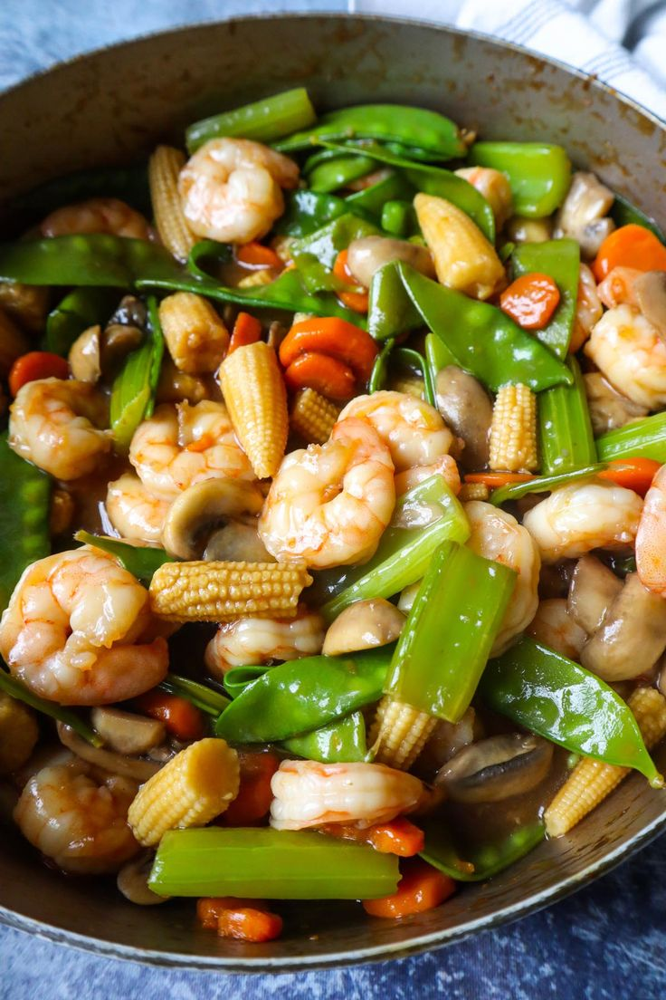Chop Suey
Prep : 10 mins | Cook : 30 mins

Fried Eggplant
Prep : 30 mins | Cook : 10 mins

Stir Fry Eggplant
Prep : 5 mins | Cook : 20 mins
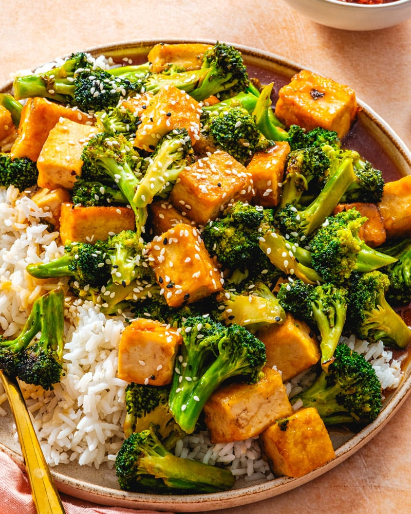Tofu and Broccoli Stir fry
Prep : 5 mins | Cook : 18 mins
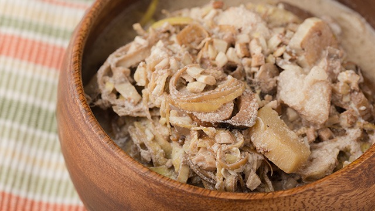Ginisang Puso ng Saging
Prep : 30 mins | Cook : 40 mins

Garlic Tokwa and Kangkong in Oyster Sauce
Prep : 10 mins | Cook : 30 mins
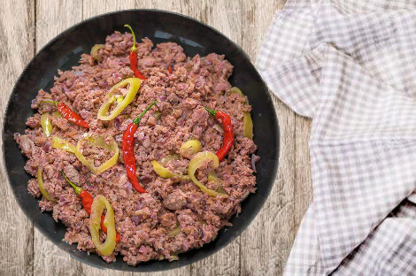Ginataang Santol
Prep : 12 mins | Cook : 35 mins

Monggo Pinakbet
Prep : 10 mins | Cook : 45 mins
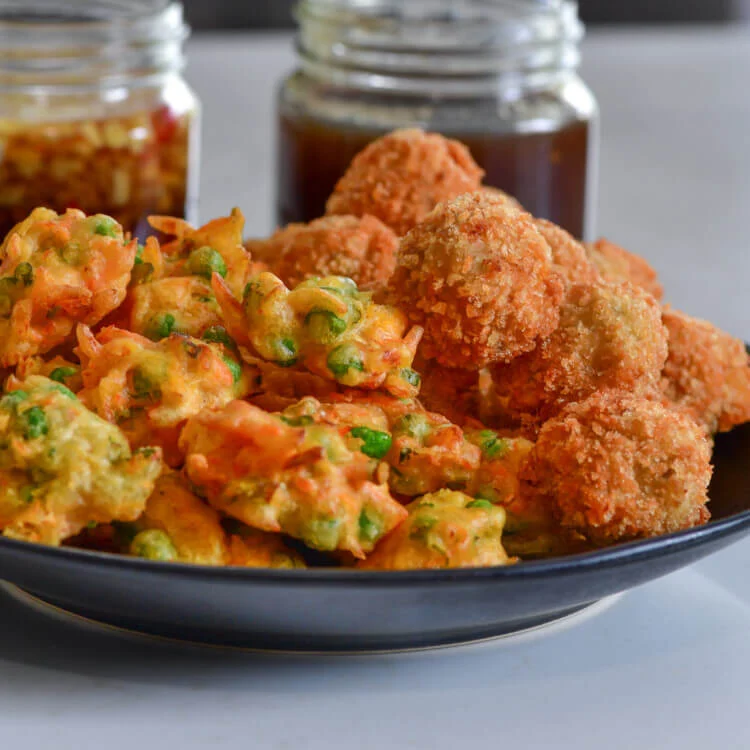Veggie Balls with Manong Sauce
Prep : 10 mins | Cook : 20 mins

Pork Monggo with Crispy Galunggong
Prep : 10 mins | Cook : 50 mins
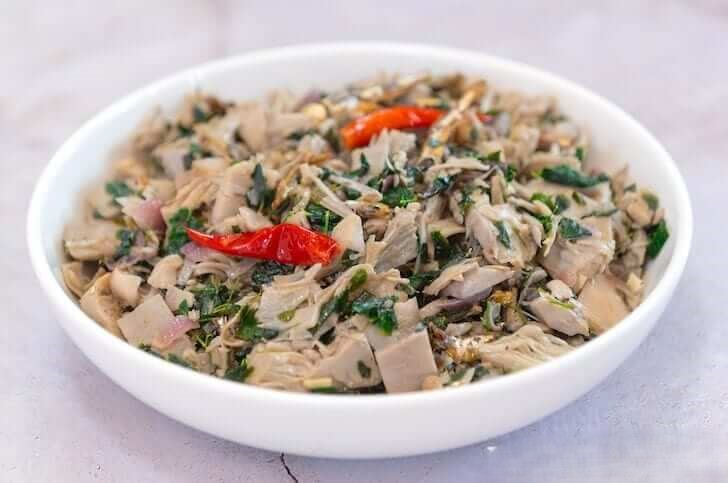Utan nga Langka
Prep : 10 mins | Cook : 35 mins
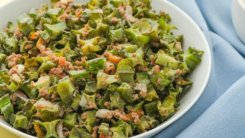Ginisang Sigarilyas
Prep : 10 mins | Cook : 45 mins

Vegetable Okoy
Prep : 10 mins | Cook : 15 mins
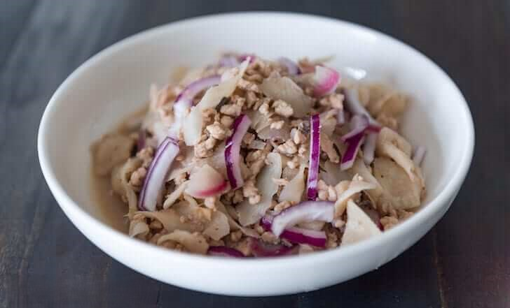Kilawing Labanos
Prep : 15 mins | Cook : 15 mins

Sarciadong Pechay
Prep : 5 mins | Cook : 12 mins

Sardines Fish Ball with Sweet and Sour Sauce
Prep : 5 mins | Cook : 10 mins
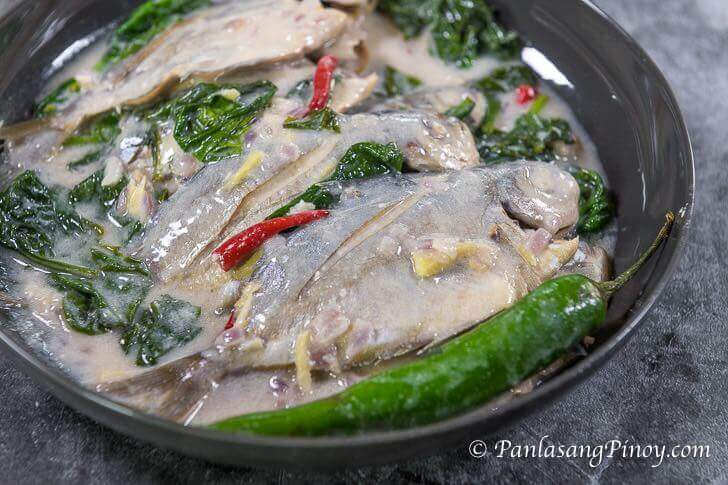Ginataang Sapsap
Prep : 5 mins | Cook : 20 mins

Bangus Sisig
Prep : 10 mins | Cook : 25 mins
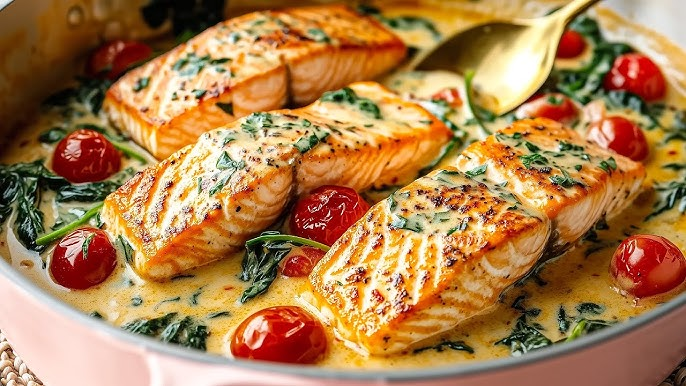Creamy Garlic Salmon
Prep : 10 mins | Cook : 20 mins

Fish in Coconut Milk with Pineapple
Prep : 10 mins | Cook : 45 mins

Sinigang na Bangus
Prep : 15 mins | Cook : 45 mins
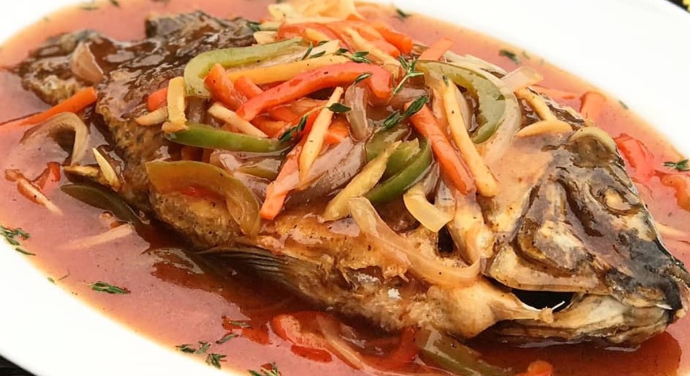Filipino Style Escabeche
Prep : 10 mins | Cook : 30 mins
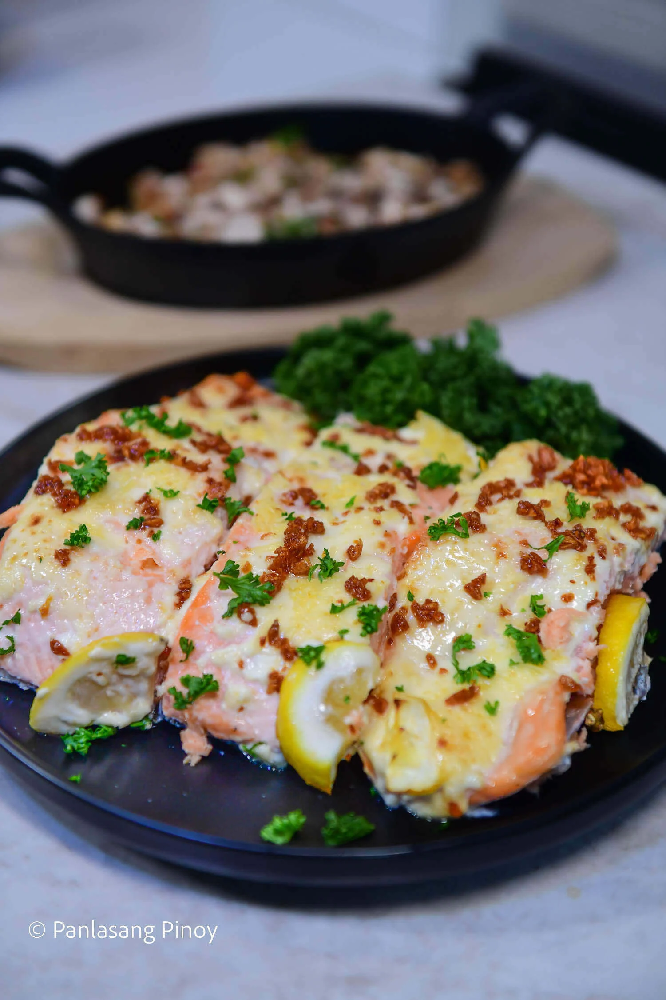Baked Garlic Salmon and Easy Tofu Sisig
Prep : 10 mins | Cook : 30 mins

Creamy Baked Salmon
Prep : 10 mins | Cook : 25 mins
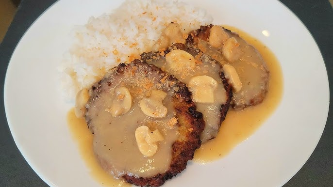Burger Steak Sardinas
Prep : 10 mins | Cook : 15 mins

Sinigang Sa Miso
Prep : 30 mins | Cook : 40 mins

Siomai (Pork and Shrimp) with Chili Garlic Oil
Prep : 30 mins | Cook : 1 hr
Chop Suey
Prep : 10 mins | Cook : 30 mins
Pork Monggo with Crispy Galunggong
Prep : 10 mins | Cook : 50 mins

Halo Halo
Prep : 5 mins

Leche Flan
Prep : 15 - 20 mins | Cook : 30 - 35 mins

Kalamay sa Latik
Prep : 10 mins | Cook : 1 hr

Kalamay Gabi
Prep : 20 mins | Cook : 1 hr

No-Cook Caramel Pastillas
Prep : 20 mins
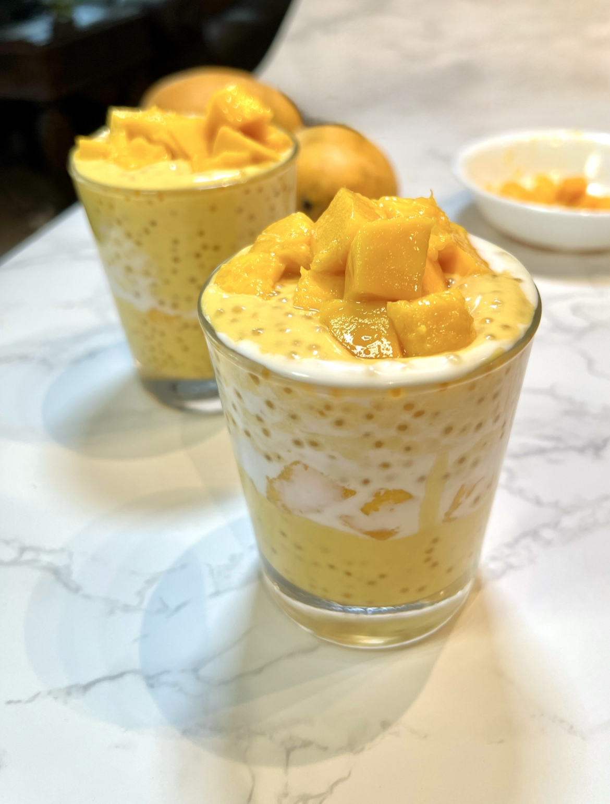Mango Sago
Prep : 10 mins | Cook : 20 mins | Chill : 2 hrs

Palitaw
Prep : 10 mins | Cook : 10 mins

Bibingkoy
Prep : 20 mins | Cook : 20 mins
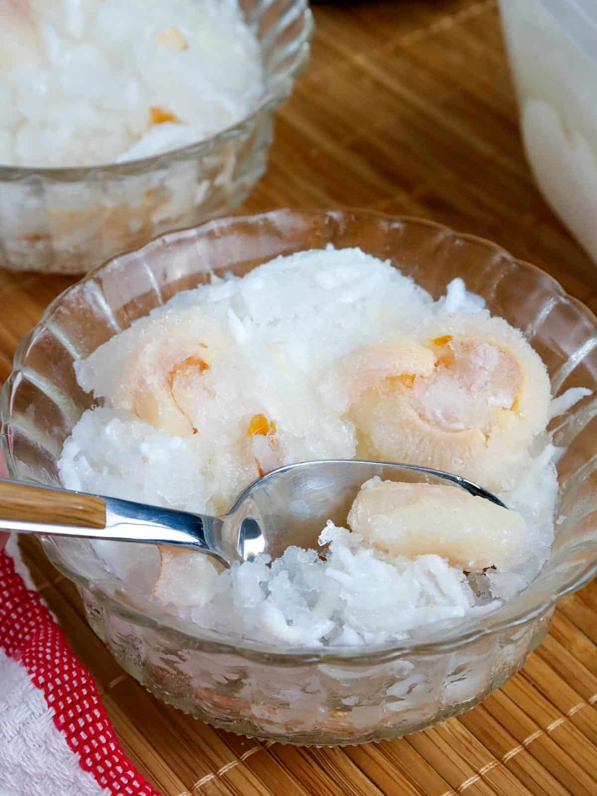Buko Lychee Sorbet
Prep : 5 mins | Freezing : 4 hrs

Mais con Queso Ice Candy
Prep : 30 mins | Freezing : 8 hrs
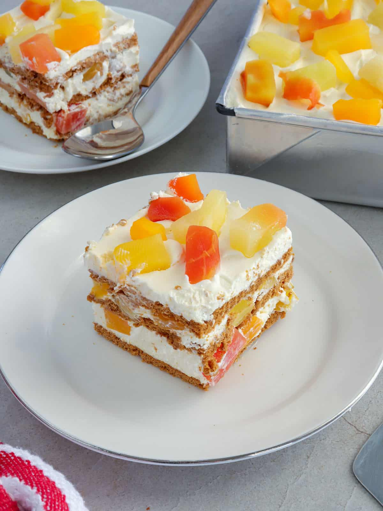Fruit Cocktail Graham Float
Prep : 20 mins | Freezing : 8 hrs

Pichi-Pichi
Prep : 10 mins | Cook : 50 mins | Cooling : 40 mins

Avocado Ice Cream
Prep : 10 mins | Freezing : 6 hrs

Halayang Ube
Prep : 10 mins | Cook : 1 hr

Calamansi Cheesecake Bars
Prep : 15 mins | Cook : 25 mins | Chill : 8 hrs

Chicken Adobo
Prep : 15 mins | Cook : 45 mins

Plum Sauce Chicken Lollipops
Prep : 20 mins | Cook : 35 mins | Marinating : 8 hrs

Chicken Hamonado
Prep : 30 mins | Cook : 40 mins

Chicken Ala King
Prep : 10 mins | Cook : 30 mins

Chicken Gizzard Ginataan
Prep : 10 mins | Cook : 1 hr & 10 mins

Chicken Fried Rice
Prep : 5 mins | Cook : 20 mins

Filipino Chicken Pasta Alfredo
Prep : 10 mins | Cook : 30 mins

KFC Style Popcorn Chicken with Gravy
Prep : 10 mins | Cook : 15 mins

Pinoy Chicken Curry
Prep : 10 mins | Cook : 1 hr
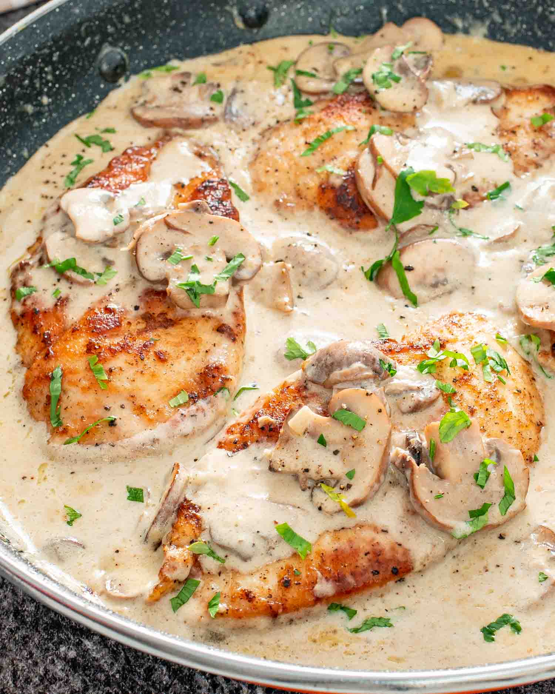Creamy Mushroom Chicken
Prep : 10 mins | Cook : 45 mins

Chicken Gising-gising
Prep : 10 mins | Cook : 35 mins

General Tso Chicken
Prep : 5 mins | Cook : 20 mins

Sinarsahang Manok
Prep : 5 mins | Cook : 47 mins

Chicken Barbecue
Prep : 1 hr | Cook : 24 mins
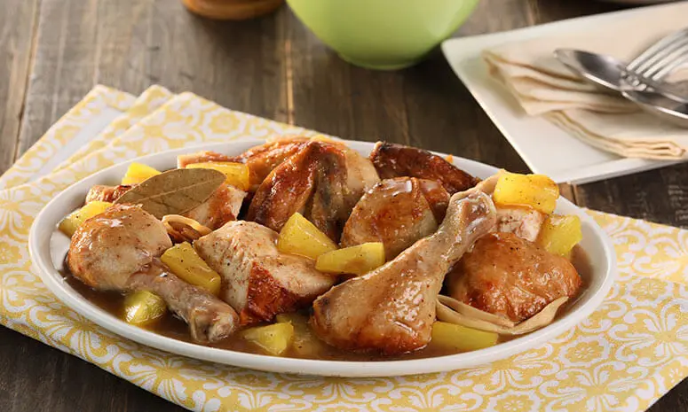Chicken Paksiw
Prep : 5 mins | Cook : 40 mins

Chicken Kare Kare
Prep : 10 mins | Cook : 50 mins

Bopis na Manok
Prep : 12 mins | Cook : 40 mins

BBQ Chicken Wrap
Prep : 10 mins | Cook : 12 mins

Filipino Beef Steak
Prep : 15 mins | Cook : 10 mins | Additional Time : 1 hr

Batangas Kaldereta
Prep : 15 mins | Cook : 1 hr & 15 mins

Beef Empanadas
Prep : 10 mins | Cook : 30 mins

Beef Tapa
Prep : 10 mins | Cook : 20 mins | Marinating : 8 hrs
Ampalaya con Carne
Prep : 15 mins | Cook : 15 mins

Beef Mechado
Prep : 20 mins | Cook : 2 hrs
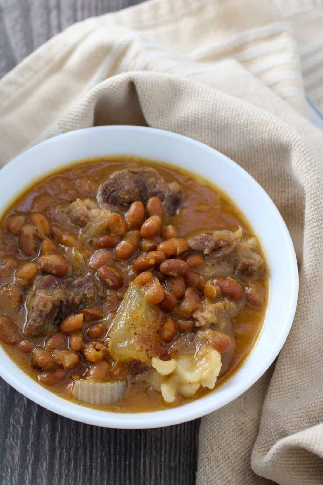Papis
Prep : 30 mins | Cook : 2 hrs

Sinigang na Baka
Prep : 15 mins | Cook : 2 hrs

Beef Salpicao
Prep : 15 mins | Cook : 10 mins

Beef in Creamy Mushroom Sauce
Prep : 10 mins | Cook : 1 hr

Bulalo
Prep : 15 mins | Cook : 5 hrs

Cheesy Corned Beef Balls
Prep : 10 mins | Cook : 20 mins

Pork Adobo
Prep : 20 mins | Cook : 1 hr & 15 mins

Traditional Filipino Lumpia
Prep : 50 mins | Cook : 30 mins
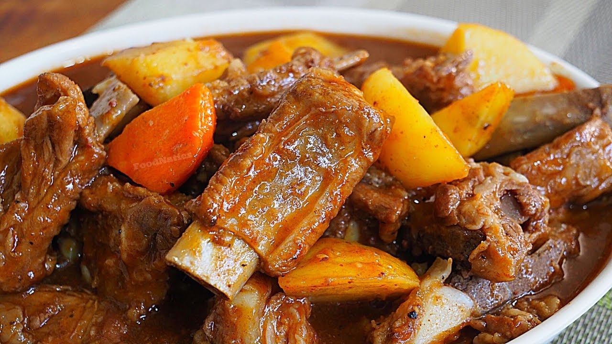Pork Ribs Caldereta
Prep : 15 mins | Cook : 1 hr & 18 mins

Lechon Kawali
Prep : 2 hrs | Cook : 20 mins

Batchoy Tagalog
Prep : 10 mins | Cook : 45 mins
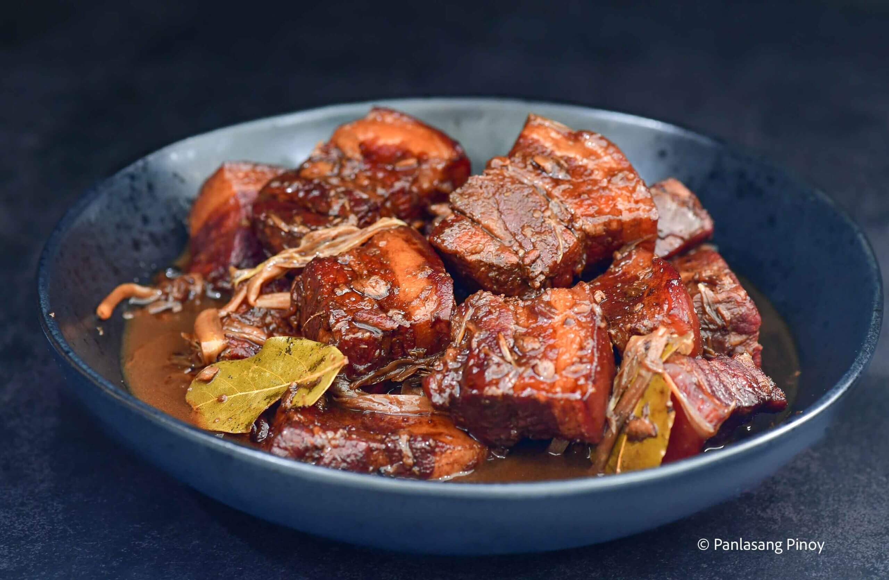Paksiw Na Baboy
Prep : 15 mins | Cook : 1 hr & 10 mins

Pork Hamonado
Prep : 5 mins | Cook : 1 hr
Kinamatisang Baboy
Prep : 15 mins | Cook : 1 hr
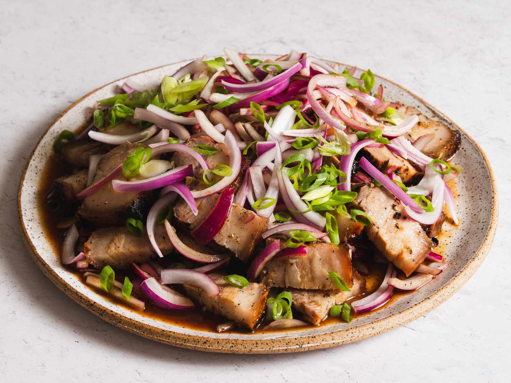Pork Kilawin
Prep : 15 mins | Cook : 30 mins
Siomai (Pork and Shrimp) with Chili Garlic Oil
Prep : 30 mins | Cook : 1 hr

Oven BBQ Spareribs
Prep : 20 mins | Cook : 3 hr & 45 mins

Pork Binagoongan sa Gata
Prep : 15 mins | Cook : 1 hr & 20 mins

Pork Sisig
Prep : 30 mins | Cook : 1 hr & 30 mins
Crispy Pata Kare Kare
Prep : 10 mins | Cook : 1 hr & 30 mins

Pork Curry Tinola
Prep : 5 mins | Cook : 1 hr
Adobong Sitaw
Prep : 10 mins | Cook : 25 mins
Pork Monggo with Crispy Galunggong
Prep : 10 mins | Cook : 50 mins

Nilupak
Prep : 10 mins | Cook : 25 mins
Bananacue
Prep : 5 mins | Cook : 7 mins

Puto Bumbong
Prep : 2 days | Cook : 3 mins
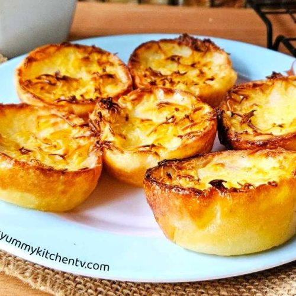Royal Bibingka
Prep : 10 mins | Cook : 50 mins

Turon
Prep : 10 mins | Cook : 12 mins
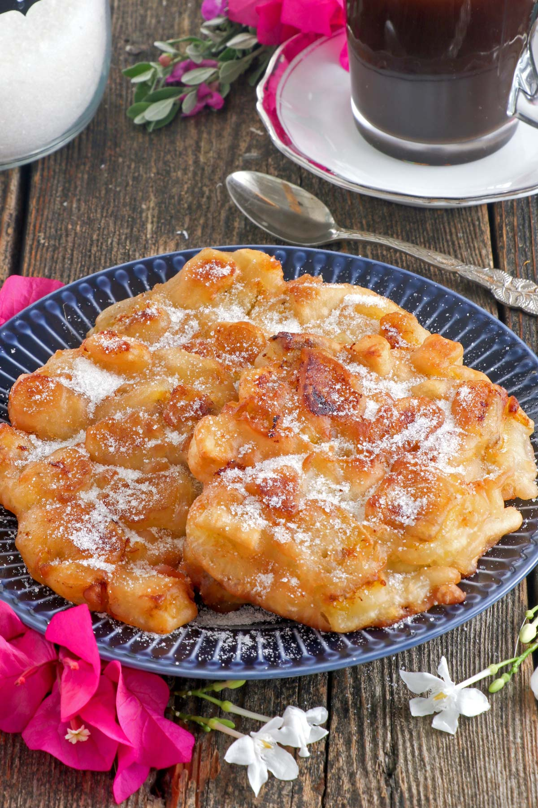Maruya
Prep : 15 mins | Cook : 10 mins

Siopao Asado
Prep : 45 mins | Cook : 1 hr
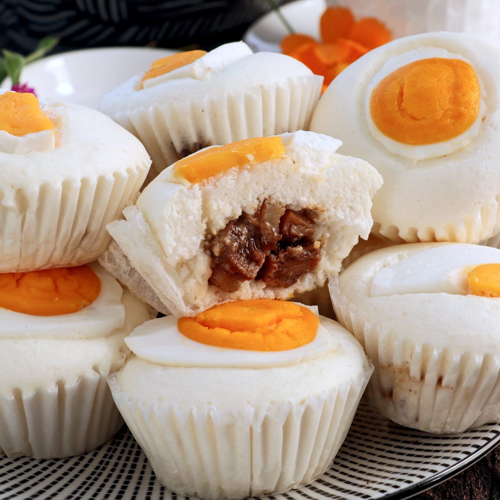Puto Pao
Prep : 15 mins | Cook : 25 mins
Traditional Filipino Lumpia
Prep : 50 mins | Cook : 30 mins
Beef Empanadas Recipe
Prep : 10 mins | Cook : 30 mins
Cheesy Corned Beef Balls
Prep : 10 mins | Cook : 20 mins
Siomai (Pork and Shrimp) with Chili Garlic Oil
Prep : 30 mins | Cook : 1 hr
KFC Style Popcorn Chicken with Gravy
Prep : 10 mins | Cook : 15 mins
BBQ Chicken Wrap
Prep : 10 mins | Cook : 12 mins
Sardines Fish Ball with Sweet and Sour Sauce
Prep : 5 mins | Cook : 10 mins
Fried Eggplant
Prep : 30 mins | Cook : 10 mins
Veggie Balls with Manong Sauce
Prep : 10 mins | Cook : 20 mins
Vegetable Okoy
Prep : 10 mins | Cook : 15 mins